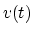
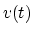

Next: About this document ...
E84 Home Work 6
- The resistance
 of a circuit is a real value which can be measured
by a multimeter. However, the impedance of a component in the circuit is
complex which cannot be measured directly. Instead, one can use an oscilloscope
to find sinusoidal voltage  across and current through the component,
and then obtain the impedance as the ratio between the complex representations of
the voltage and current. Suppose we find:
of a circuit is a real value which can be measured
by a multimeter. However, the impedance of a component in the circuit is
complex which cannot be measured directly. Instead, one can use an oscilloscope
to find sinusoidal voltage  across and current through the component,
and then obtain the impedance as the ratio between the complex representations of
the voltage and current. Suppose we find:
Find the impedance (both resistance and reactance) and the admittance (both
conductance and susceptance) of the circuit.
- A voltage
(volt) is applied to
a resistor , a capacitor and an inductor
connected in parallel. Find the over all steady state current
by phasor method.
- A voltage
(volt V) is applied to a circuit
composed of two branches in parallel. One branch has a capacitor ,
while the other has a resistor and an inductor in series.
Using phasor method, find the impedances and of the two branches,
and then the overall combined impedance of the circuit. Then find
the steady state current through the circuit.
- Solve the problem above again but this time use the admittances
,
,
(instead of the
impedances , , ). Recall that Ohm's law becomes
. (Make sure all impedances you found in
previous problem are correct before you find the admittances as their
reciprocals.)
- Find the output voltage
 across the right most branch
containing
across the right most branch
containing  and
and  , when and
and the input
, assuming ,
, and .
, when and
and the input
, assuming ,
, and .
Next: About this document ...
Ruye Wang
2008-01-10